Guide pas à pas, avec les écrans réels de l’administration : connexion, catégorie, marque, fiche produit, photos, tableau du catalogue et import CSV.
Document du 28 septembre 2026. Les captures proviennent de l’interface admin du site.
Où ouvrir l’administration.
Sur le site en ligne : https://dkhometech.sn/admin/login.
En local, pendant le développement : http://localhost:3000/admin/login.
Utilisez le compte administrateur qui vous a été remis. Ce manuel ne contient pas le mot de passe.
Les textes visibles sur le formulaire d’exemple (SKU RF-350, « Réfrigérateur 350 L ») servent à montrer la saisie. Ce produit d’exemple n’a pas été enregistré.
Sommaire
Se connecter
Créer la catégorie avant le produit
Créer la marque si besoin
Ouvrir le catalogue Produits
Remplir la fiche, champ par champ
Ajouter les photos à la création
Enregistrer et lire le tableau
Modifier un produit et sa galerie
Ajouter une photo depuis la ligne du tableau
Supprimer un produit
Importer ou exporter un CSV
Checklist avant de publier
1. Se connecter
Ouvrez l’adresse de connexion indiquée en première page.
Saisissez l’adresse e-mail du compte administrateur.
Saisissez le mot de passe.
Cliquez sur le bouton orange Se connecter.
La page suivante est l’espace administration. Le menu de gauche reste visible. Le lien Produits est celui du catalogue.
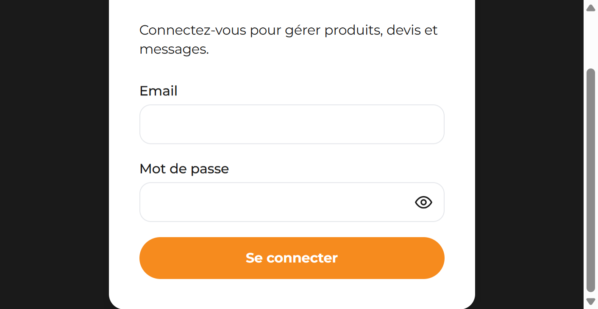
Figure 1 — Écran de connexion. Le bouton orange lance la session.
2. Créer la catégorie avant le produit
Un produit doit appartenir à une catégorie. Si la bonne catégorie existe déjà, passez à l’étape 4 et choisissez-la dans la liste. Sinon, créez-la d’abord.
Dans le menu de gauche, cliquez sur Catégories.
Descendez jusqu’au bloc Nouvelle catégorie.
Remplissez au minimum le Nom.
Laissez le Slug vide : le site le fabrique à partir du nom. Ce slug sera la valeur category_slug si vous importez plus tard un CSV.
Choisissez le Parent. « — Racine — » crée une catégorie principale. Un parent existant crée une sous-catégorie.
Laissez la case Active cochée pour que la catégorie soit utilisable.
Cliquez sur Ajouter.
La catégorie apparaît ensuite dans l’arborescence, avec son slug (texte après la barre oblique) et le nombre de produits. Les boutons Éditer, les flèches et Suppr. servent à la modifier, la déplacer ou la retirer.
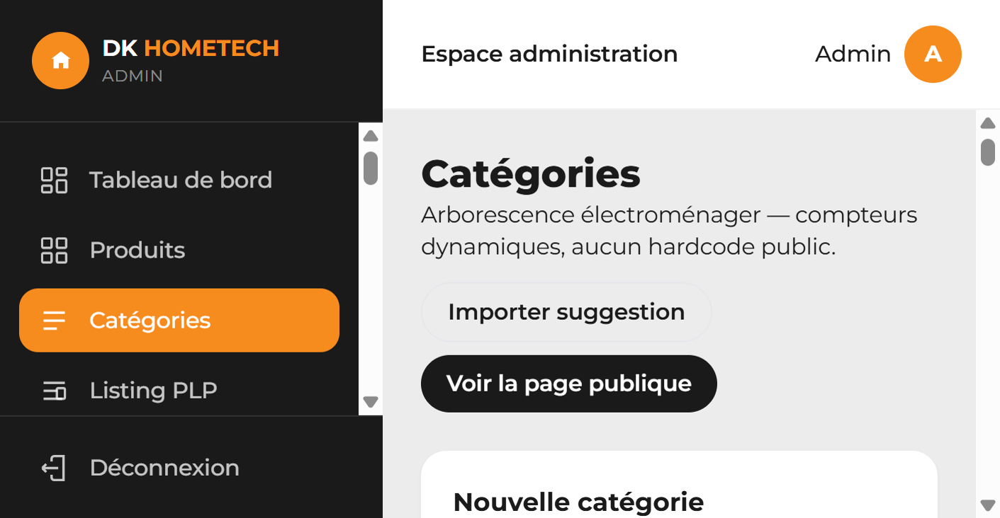
Figure 2 — Menu Catégories. « Importer suggestion » ajoute une arborescence électroménager sans écraser les slugs déjà présents.
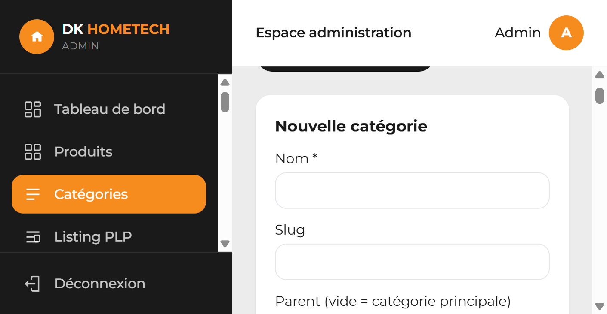
Figure 3 — Formulaire. Le nom est obligatoire. Le parent vide crée une catégorie principale.
Champs de la catégorie
Champ
Rôle
Nom *
Nom affiché dans le menu et dans la liste du produit.
Slug
Adresse courte. Vide = généré depuis le nom. À recopier tel quel dans un CSV (category_slug).
Parent
Vide (racine) = catégorie principale. Sinon, sous-catégorie de la catégorie choisie.
Description
Texte de présentation de la catégorie.
Meta title / Meta description
Textes pour le référencement de la page catégorie.
Active
Cochez pour rendre la catégorie disponible.
Catégorie populaire
La met en avant parmi les catégories populaires.
3. Créer la marque si besoin
La marque est facultative. Un produit peut être enregistré avec « — Aucune — ».
Dans le menu, cliquez sur Marques.
Saisissez le Nom.
Laissez le slug vide pour le générer automatiquement, ou saisissez-le vous-même.
Cliquez sur Ajouter.
Deux cases existent sous la description : Marque en vedette (bandeau) et Afficher dans le footer. Après création, Éditer ouvre aussi le panneau des photos et du logo.
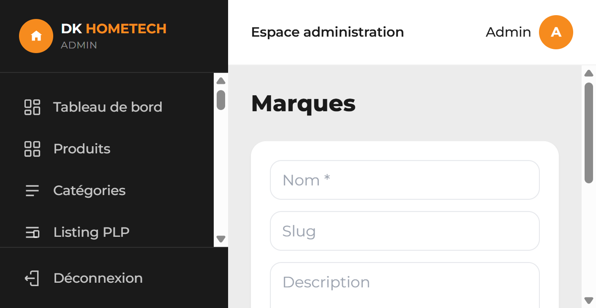
Figure 4 — Formulaire des marques. Seul le nom est obligatoire.
4. Ouvrir le catalogue Produits
Cliquez sur Produits dans le menu (bouton orange quand la page est ouverte).
En haut à droite, cliquez sur ＋ Ajouter un produit.
Le bouton devient Annuler tant que le formulaire est ouvert. Annuler ferme la fiche et n’enregistre rien.
Sous le titre se trouve le bloc Import / Export CSV, décrit au chapitre 11. Pour un seul produit, utilisez le formulaire.
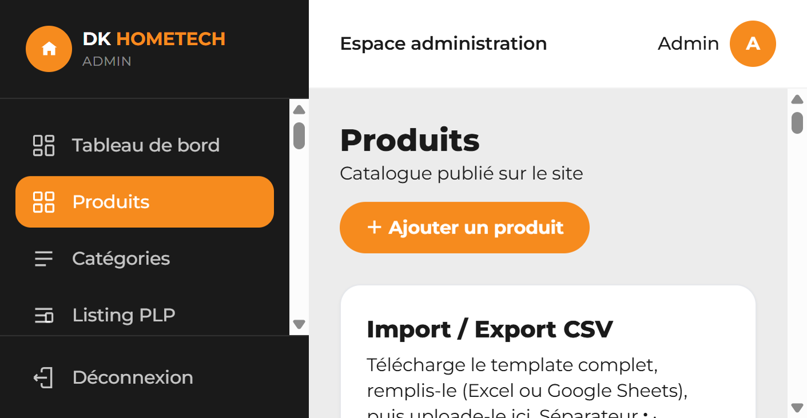
Figure 5 — Page Produits. Le bouton orange ouvre la fiche « Nouveau produit ».
5. Remplir la fiche, champ par champ
Le titre du formulaire est Nouveau produit. Deux champs sont obligatoires : Catégorie et Nom. Le navigateur refuse l’enregistrement si l’un des deux est vide.
Catégorie, marque, référence et nom
Catégorie — ouvrez la liste et choisissez la catégorie créée au chapitre 2. « Choisir… » n’est pas une catégorie valide.
Marque — choisissez une marque, ou laissez « — Aucune — ».
SKU — référence interne (exemple de saisie : RF-350). Ce champ peut rester vide.
Nom — nom commercial affiché sur le site. Exemple de saisie : Réfrigérateur 350 L.
Résumé — une phrase courte sous le nom. Exemple : Réfrigérateur 2 portes, classe A+.
L’adresse web du produit (slug) n’est pas demandée ici. Elle est créée automatiquement à partir du nom.
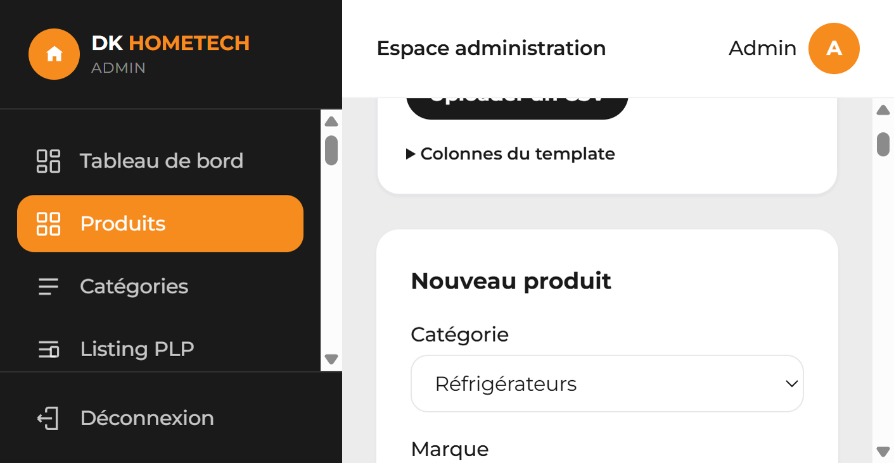
Figure 6 — Début de la fiche. La catégorie est choisie dans la liste.
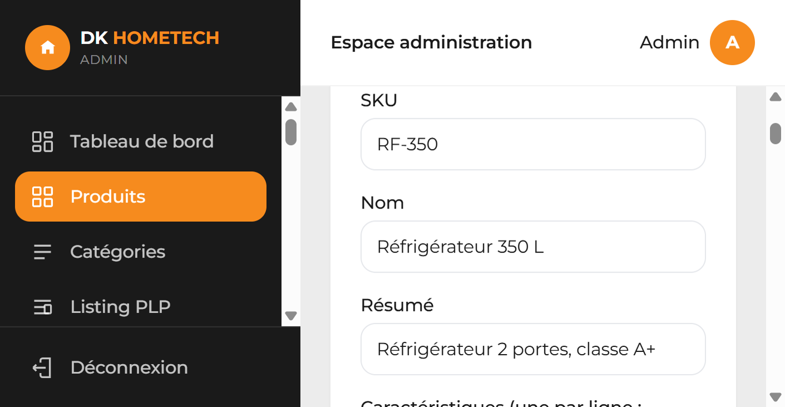
Figure 7 — SKU, nom obligatoire et résumé. Les valeurs de la capture sont un exemple.
Caractéristiques
Une caractéristique par ligne, au format Libellé: valeur. Les deux-points séparent le libellé de la valeur.
Exemple de saisie :
Capacité: 350 L
Nombre de portes: 2
Classe énergétique: A+
Garantie: 12 mois
Le placeholder du champ rappelle le même format : « Capacité: 320 L » puis « Nombre de portes: 2 ».
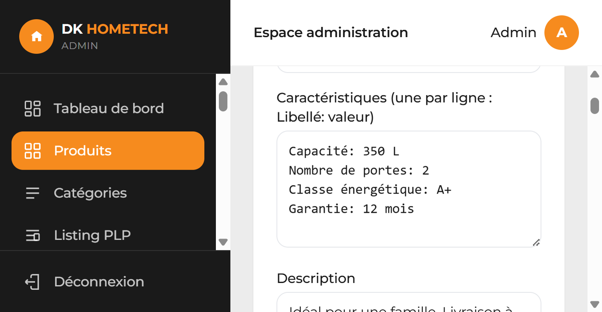
Figure 8 — Caractéristiques, une par ligne, puis la description libre.
Description, prix, stock, état et statut
Description — texte plus long de la fiche produit.
Prix (vide = sur devis) — montant en FCFA, sans espace ni symbole. Laissez le champ vide pour afficher « Sur devis » sur le site.
Prix promo — prix réduit en FCFA. Laissez-le vide s’il n’y a pas de promotion.
Stock — nombre d’unités. Exemple de saisie : 4.
État — Neuf ou Reconditionné.
Statut — voir le tableau ci-dessous. La valeur de départ est Publié.
Déstockage — cochez pour afficher le badge « Déstockage » sur la fiche publique.
Produit personnalisable — cochez pour afficher le badge « Personnalisable ».
Statut
Effet
Publié
Le produit apparaît dans le catalogue public.
Brouillon
Le produit est enregistré dans l’admin et reste hors du catalogue public.
Archivé
Le produit est retiré du catalogue public et reste dans l’admin.
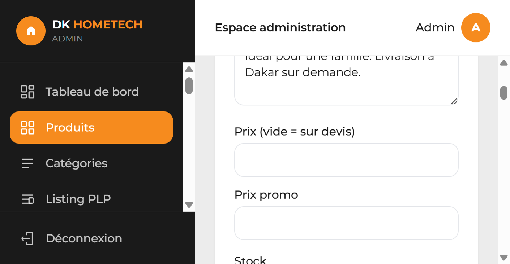
Figure 9 — Prix vide = sur devis. Prix promo facultatif. Le stock est juste en dessous.
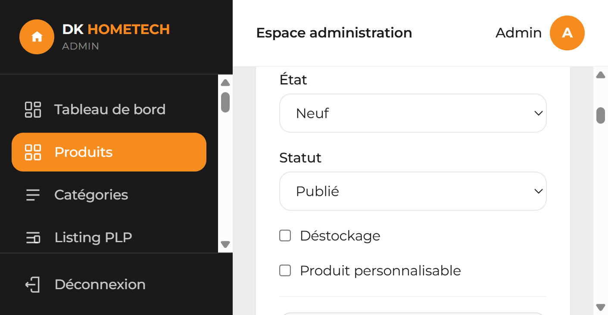
Figure 10 — État Neuf, statut Publié, cases Déstockage et Produit personnalisable.
6. Ajouter les photos à la création
En bas de la fiche « Nouveau produit », le bloc Photos du produit accepte une ou plusieurs images. Formats acceptés : JPEG, PNG, WebP.
Cliquez sur le sélecteur de fichiers.
Choisissez une ou plusieurs photos.
Les noms s’affichent sous le sélecteur. Retirer enlève un fichier de la liste avant l’enregistrement.
Les fichiers partent vers le serveur au moment du clic sur Enregistrer. Le message de l’écran le précise : « elles seront uploadées à l’enregistrement ».
La première photo de la liste devient la couverture affichée dans le catalogue.
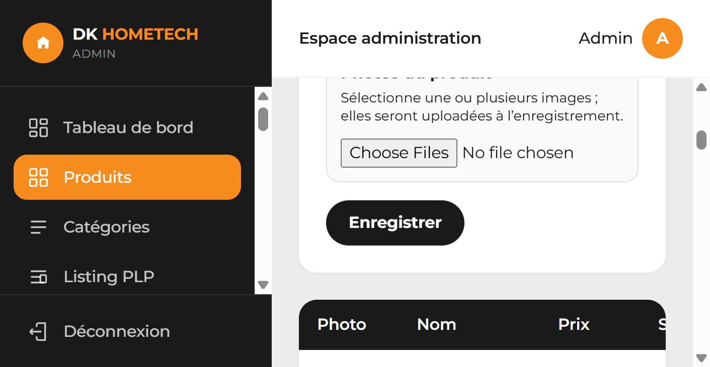
Figure 11 — Photos avant enregistrement, puis le bouton noir Enregistrer.
7. Enregistrer et lire le tableau
Relisez catégorie, nom, prix et statut.
Cliquez sur Enregistrer. Le bouton affiche « Enregistrement… » pendant l’envoi.
Le formulaire se ferme. Le produit apparaît dans le tableau.
Le tableau a cinq colonnes : Photo, Nom, Prix, Statut, Actions.
Le prix s’affiche en FCFA, en orange. Un prix vide s’affiche « Sur devis ».
Le statut Publié est une pastille verte.
Les actions de chaque ligne sont Éditer (orange), ＋ Photo (bleu) et Supprimer (rouge).
Si un message rouge apparaît au-dessus du formulaire, l’enregistrement a échoué. Corrigez le champ indiqué, puis cliquez de nouveau sur Enregistrer.
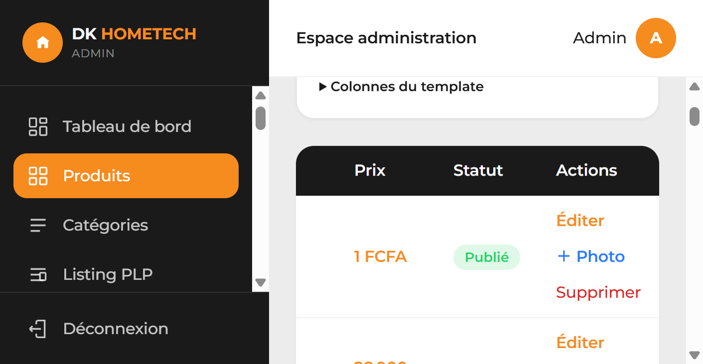
Figure 12 — Actions d’une ligne : Éditer, ＋ Photo, Supprimer.
8. Modifier un produit et sa galerie
Dans le tableau, cliquez sur Éditer de la ligne voulue.
Le formulaire s’ouvre avec le titre Modifier le produit et les valeurs déjà enregistrées.
Changez les champs nécessaires.
Cliquez sur Enregistrer pour garder les changements de texte, de prix ou de statut.
Annuler, en haut de page, ferme la fiche sans enregistrer les champs du formulaire.
Une fois le produit déjà créé, les photos se gèrent dans le bloc Photos du produit, sans attendre le bouton Enregistrer du formulaire. Chaque action photo (ajout, rôle, ordre, suppression) est envoyée tout de suite.
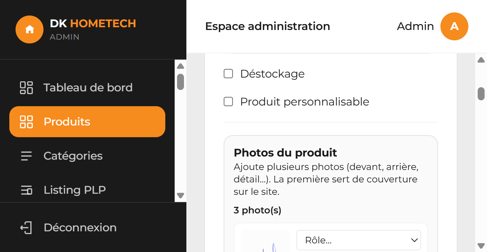
Figure 13 — En édition, la galerie indique le nombre de photos. La première sert de couverture.
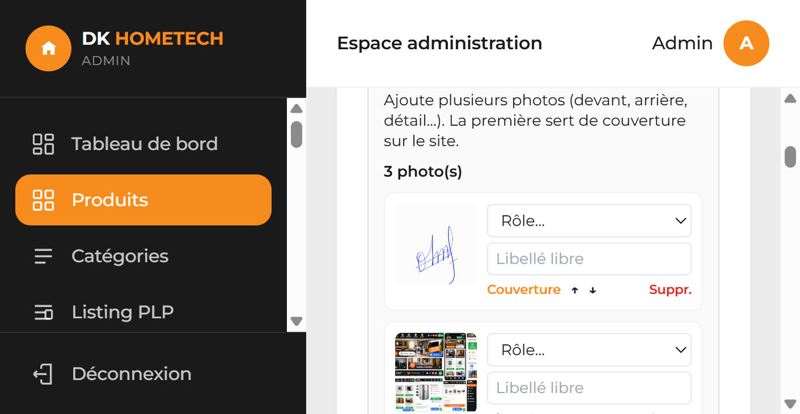
Figure 14 — Chaque photo a un rôle, un libellé, les flèches d’ordre et Suppr.
Ce que vous pouvez faire sur chaque photo
Contrôle
Effet
Couverture
La première photo de la liste est la couverture du catalogue. Le mot « Couverture » s’affiche en orange sous cette photo.
Rôle
Liste : Principale, Devant, Arrière, Côté, Côté gauche, Côté droit, Intérieur, Détail, Autre. Le choix est enregistré dès que vous changez la liste.
Libellé libre
Texte optionnel, par exemple « Vue salon ». Il est enregistré quand vous quittez le champ.
↑ et ↓
Montent ou descendent la photo. La photo passée en première position devient la couverture.
Suppr.
Demande « Supprimer cette photo ? ». La confirmation retire uniquement cette image.
Ajouter plusieurs photos sur un produit déjà créé
Choisissez le Rôle (nouvelles), par défaut Principale.
Saisissez un Libellé si vous voulez un texte, par exemple « Vue salon ».
Cliquez sur ＋ Ajouter photos et sélectionnez un ou plusieurs fichiers JPEG, PNG ou WebP.
Le bouton affiche « Upload… » pendant l’envoi. Les vignettes apparaissent ensuite dans la liste.
9. Ajouter une photo depuis la ligne du tableau
Pour ajouter une seule photo sans ouvrir toute la fiche :
Sur la ligne du produit, cliquez sur ＋ Photo.
Choisissez un fichier JPEG, PNG ou WebP.
Le libellé devient « Upload… » le temps de l’envoi, puis la miniature de la ligne se met à jour.
Pour classer les photos, leur donner un rôle ou en supprimer une, ouvrez Éditer et utilisez la galerie du chapitre 8.
10. Supprimer un produit
Sur la ligne, cliquez sur Supprimer.
Le navigateur demande « Supprimer ce produit ? ».
Confirmez pour retirer le produit du catalogue. Annulez la boîte de dialogue pour le conserver.
11. Importer ou exporter un CSV
Le bloc Import / Export CSV est en haut de la page Produits, sous le bouton d’ajout. Il sert à créer ou mettre à jour beaucoup de produits d’un coup.
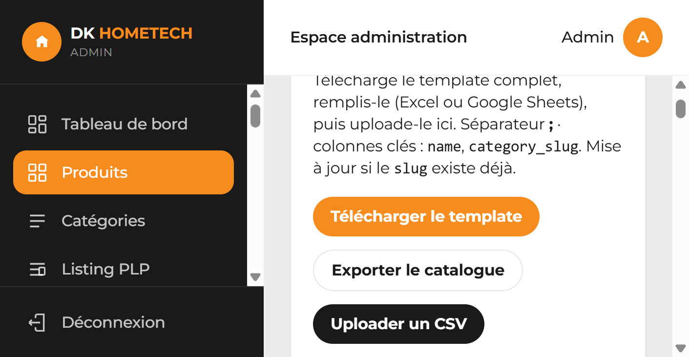
Figure 15 — Template, export du catalogue et upload. Le séparateur est le point-virgule.
Cliquez sur Télécharger le template.
Ouvrez le fichier dans Excel ou Google Sheets.
Remplissez une ligne par produit. Gardez le séparateur point-virgule (;).
La catégorie doit déjà exister. Dans category_slug, recopiez le slug affiché sur la page Catégories (le texte après la barre oblique).
Enregistrez en CSV.
Cliquez sur Uploader un CSV et choisissez le fichier.
Si le slug du produit existe déjà, la ligne met à jour ce produit. Un slug nouveau crée un produit. Un message vert confirme l’import. Les lignes en erreur s’affichent en rouge sous les boutons : corrigez le fichier et réimportez.
Exporter le catalogue télécharge les produits déjà enregistrés, au même format, pour les modifier puis les réimporter.
Colonnes du template (le détail est aussi repliable sous les boutons) :
Colonne
Contenu
sku
Référence interne.
name *
Nom du produit. Obligatoire.
slug
Adresse du produit. Si cette valeur existe déjà, la ligne met le produit à jour.
category_slug *
Slug exact d’une catégorie déjà créée. Obligatoire.
brand_slug
Slug d’une marque déjà créée. Vide = aucune marque.
short_description
Résumé.
description
Description longue.
price
Prix en FCFA. Vide = sur devis.
promo_price
Prix promo en FCFA.
stock_quantity
Quantité en stock.
condition
neuf ou reconditionne.
is_clearance
1 pour Déstockage, 0 sinon.
is_customizable
1 pour Personnalisable, 0 sinon.
status
draft (brouillon), published (publié) ou archived (archivé).
meta_title
Titre de référencement.
meta_description
Description de référencement.
image_urls
Adresses d’images déjà en ligne, séparées par |.
12. Checklist avant de publier
La catégorie existe et elle est active.
Le nom du produit est celui que le client doit lire.
Le prix est en FCFA, ou le champ est vide pour « Sur devis ».
Le statut est Publié si le produit doit être visible sur le site.
Au moins une photo est présente. La première de la galerie est la couverture.
Les caractéristiques suivent le format Libellé: valeur, une par ligne.
Après Enregistrer, la ligne est bien dans le tableau, avec la bonne pastille de statut.
Ordre le plus simple pour un produit.
Catégories → (Marques si besoin) → Produits → ＋ Ajouter un produit → catégorie, nom, prix, photos → Enregistrer → vérifier la ligne du tableau.
DK HOMETECH — manuel d’enregistrement des produits, administration du site.